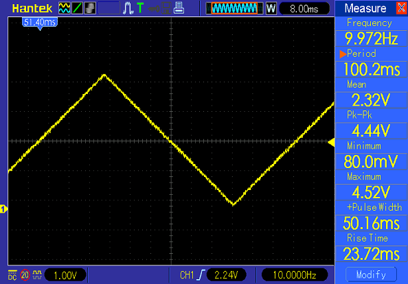

ATtiny85 タップテンポ付LFO その2
2018年08月31日 カテゴリー：実験等

前回のLFOをさらに発展させました。主な変更点は下記の通りです。考え方は前回と同じで、一定間隔でPWMのデューティ比を変更します。
・1周期126分割→510分割（PWMの分解能8ビット分をフルに生かせる）
・PWM周波数31.25kHz→250kHz（出力ピンPB0→PB1）
・タイマー割り込みを使ってPWMデューティ比を変更、タップ時間計測
タイマー・割り込みに関する詳細説明は省きます。ATtiny85（日本語データシートpdf）は2つのタイマーがあり、Timer0でデューティ比変更時間の管理とタップテンポの時間計測をし、Timer1でPWMを使います。該当レジスタを変更することにより様々な設定を行うわけですが、見慣れないビット演算が出てくるので最初は戸惑うかもしれません。
参考ページ→C言語入門::付録 ビット演算（びんずめ堂）・AVRでのタイマとPWMの使い方（うしこlog）・AVRでの割り込みの使い方（うしこlog）
今回のスケッチでは三角波を生成しています。ATtiny85のPWMを最高速で動作させるため、Arduino IDEのツールメニューから「Timer1 Clock: "64MHz"」を選択し「ブートローダを書き込む」という操作を行っておく必要があります。
▽Arduinoスケッチ（94行）
const int PWMpin = 1;
const int POTpin = 3;
const int SWpin = 4;
volatile byte rateCount = 0; // Timer0用カウンタ = 割り込み回数
volatile byte rateCountNum = 0; // Timer0 割り込み回数決定値
volatile int pwmCount = 0; // PWM用カウンタ 0～509
volatile unsigned long timeCount = 0; // タップ時間取得用カウンタ
unsigned long tapTime = 0; // タップ間隔時間
unsigned long timeTemp = 0; // タップ間隔時間一時保存用
unsigned long swCount = 0; // スイッチ用カウンタ
const byte rateAdj = 99; // 周期補正率 % 実測して設定
int oldPOTvalue = 2000; // 前回ADC読取値
int newPOTvalue = 2000; // 今回ADC読取値
void setup() {
PLLCSR |= (1 << PLLE); // Timer1 PLL許可
delayMicroseconds(200); // Timer1 PLL許可後安定するまで待機
PLLCSR |= (1 << PCKE); // Timer1 PCK(64MHz)許可
TCCR1 = 0b01100001; // Timer1 PWM動作A 分周なし
OCR1A = 100; // Timer1 比較Aの値 = PWMデューティ比
TCCR0A = 0b00000010; // Timer0 CTCモード
TCCR0B = 0b00000010; // Timer0 クロック8分周
TIMSK |= (1 << OCIE0A); // Timer0 比較A割り込み許可
OCR0A = 100; // Timer0 比較Aの値 = 割り込み間隔 us
pinMode(PWMpin, OUTPUT);
pinMode(POTpin, INPUT);
pinMode(SWpin, INPUT_PULLUP);
sei(); // 全割り込み許可
}
// LFO（Timer0 比較A割り込み）---------------------------------------
ISR(TIMER0_COMPA_vect) {
if (rateCount == rateCountNum) {
rateCount = 0;
if (pwmCount == 510) pwmCount = 0;
if (pwmCount < 256) OCR1A = pwmCount; // 三角波（上昇）
else OCR1A = 510 - pwmCount; // 三角波（下降）
pwmCount++;
}
rateCount++;
timeCount++;
}
void loop() { // 1ループ約0.14ms
// タップテンポ ---------------------------------------------------
if (digitalRead(SWpin) == LOW) {
swCount++;
if (swCount == 70) { // チャタリング対策 10msスイッチ押下で検出
// 前回スイッチ検出から経過した時間を記録
tapTime = timeTemp + timeCount * OCR0A * 0.001;
timeTemp = 0; // 経過時間をリセット
timeCount = 0;
if ( 100 < tapTime && tapTime < 3000) { // 周期制限 0.1秒～3秒
// デューティ比変更間隔時間へ換算（*1000/510*周期補正率）
rateCalc(tapTime * 1.96078 * rateAdj * 0.01);
}
}
}
else swCount = 0;
// ADC ------------------------------------------------------------
newPOTvalue = analogRead(POTpin); // 読取値が4以上変化で変更
if (abs(newPOTvalue - oldPOTvalue) > 3) {
rateCalc((100 + 3 * newPOTvalue) * 1.96078 * rateAdj * 0.01);
oldPOTvalue = newPOTvalue;
}
}
// デューティ比変更間隔時間(x)変更計算 x = p * q + r ----------------
void rateCalc(int x) {
byte q; // 商
byte r; // 余り
int pMin;
byte qMin;
byte rMin = 255;
for (int p = 255; p > 99; p--) { // 除数255から100まで計算
q = x / p;
r = x % p;
if (r < rMin) { // 余りrが最小値の時の値を記録
pMin = p;
qMin = q;
rMin = r;
}
}
// OCR0A変更前に経過した時間をtimeTempに代入した後、
// カウンタをリセットして新しいOCR0Aで再度カウント開始
timeTemp = timeTemp + timeCount * OCR0A * 0.001;
timeCount = 0;
OCR0A = pMin;
rateCountNum = qMin;
rateCount = 0;
}
＜タップ時間計測について＞
Timer0に比較A割り込みを設定している関係で、millis関数で時刻を取得しようとしてもうまくいきません。タップ時間の測定は割り込み回数をカウントすることにより行います。Timer0はクロック8MHz、8分周なので最小時間単位は1usです。OCR0Aを200にすると200usごとに割り込みが発生します。
【例】0.2msごとに割り込みが発生（OCR0A＝200）→割り込みが50回発生（timeCount＝50）→経過時間10ms（0.2ms×50）
OCR0Aを更新する時に、更新前の時間（timeTemp）を計算しておく必要があります（スケッチ最下部）。TCNT0も加味した方がより正確ですが、そこまでの精度は必要ないでしょう。タップについては1回目と2回目の区別はなく、毎回前回タップからの経過時間を計算します。経過時間が設定可能なLFO周期内であるときだけ、実際に周期を変更することになります。
＜デューティ比変更間隔時間の計算処理について＞
OCR0Aを200とし、割り込みが発生する度にデューティ比を変更すると、周期は102ms（0.2ms×510）です。OCR0Aは255まで（8ビット）なので、このままでは周期を長く設定できません。分周比を変えることも考えましたが時間分解能が悪くなります。そこで長い周期を得るために、何回か割り込みが発生した時にデューティ比を変更するようにします。
【例】0.2msごとに割り込みが発生（OCR0A＝200）→割り込みが10回発生（rateCountNum＝10）するごとにデューティ比変更→周期1020ms（0.2ms×10×510）
次は逆に周期から割り込み間隔と回数を計算します（上記スケッチのrateCalc関数）。ちょっと無理やり感がありますが、100～255usの割り込み間隔で割った商（＝割り込み回数）と余り（＝誤差）を全て計算し、余りが最小になる時を採用します。割り込み間隔はあまりに狭いと問題がありそうなので、100us以上としました。
【例】最適値計算：周期1030ms（1030000us）→デューティ比変更間隔時間2019us(1030000÷510切捨)→224us(割り込み間隔)×9(回数)＋3us(誤差)
計算値設定後：0.224msごとに割り込みが発生（OCR0A＝224）→割り込みが9回発生（rateCountNum＝9）するごとにデューティ比変更→周期1028ms（0.224ms×9×510）
ほとんどの場合で周期の誤差は2ms以内に収まります。実は上記例では2019usを+1usして再計算したほうが誤差が減るのですが、そこまでの計算はしないことにします。